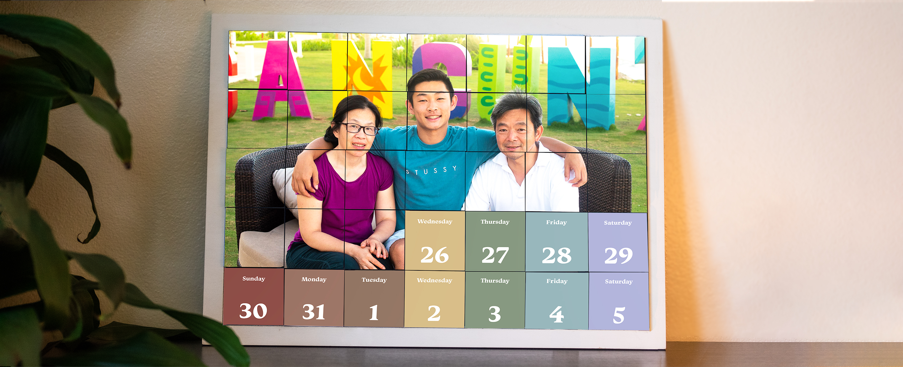

Encore
A New Way for Families of Stroke Survivor
to Encourage Rehabilitation Participation
project info
when
spring 2019 - spring 2020
role
Product Design / Research / Prototyping
client
Brittingham Social Innovation Design Lab
USC Social Venture Coaching Competition
overview
795,000 people in the US suffer from a stroke each year. More than a third of stroke survivors suffer from apathy and depression. Adhering to rehabilitation guidelines is challenging for survivors, and few reach their potential level of recovery. Diane Cioacin, Nicole Fleck, and I teamed up in the Spring semester of 2019 to develop prototypes of a product that might help survivors continue with their rehabilitation at home.
I developed numerous iterations on my own in the past year to create Encore: daily letters of love from family and friends that creates feelings of progress, builds self-efficacy, and motivates stroke survivors through the toughest phase of their recovery.
challenge
What are we trying to solve?
How might we help stroke survivors continuously engage with rehabilitation after returning home from discharge?
project scope
Narrowing it down
As motivating compliance to rehabilitation can be a broad topic, this project is focused on addressing the decline of self-efficacy after returning home. Specifically, how might we inspire stroke survivors to engage with physical therapy when it seems like recovery is unlikely.
field research
Developing empathy and connection
We collaborated with the One-Generation senior enrichment facility to talk with over 180 stroke survivors. Through activities such as sharing meaningful pictures and drawing a day in their lives, we gained a better understanding of their dreams, needs, and constraints. After dancing and connecting in meaningful ways, our team synthesized the data and worked with them to hold affinity diagramming workshops and co-create solutions.
My team and I identified the relationship between older adults and physical activity as an opportunity where design can make an impact. These pain points reminded me of my mother’s own hardships recovering from a knee injury, which still affects her activities of daily living.

Loss of Identity
Intangible
Barriers
Therapy reminds
people they are sick
Slow progress of recovery
makes people feel helpless
Barriers to physical therapy
including transportation and cost
prototype 1
We first targeted the broader problem of homebound older adults not exercising enough because they were disappointed in their body. Our design goal was to create a sense of community and belonging without leaving their home. We leveraged imagery of inspiring older fitness celebrities to create a digital home gym where users can attend classes with their friends.
We tested our prototype to see if we understood the right problem, and learned that disappointment in their abilities often stems from an injury that hasn't recovered. We shifted our focus and returned to the field with the new hypothesis: if therapy exercises were more enjoyable, engagement and confidence in their body would increase. This was only the tip of the iceberg as we realized boring exercise options were only the surface of a greater problem…
How might we use family pictures to help older adults feel empowered in their recovery?
prototype 2
Complying with therapy is not only challenging because of the exercises, but also humiliating because of its impact on daily life, relationships, and identity. Narrowing our focus to helping survivors of a stroke, a leading cause of disability, we talked to stakeholders involved throughout the recovery process and created empathy maps to better understand what life after stroke is like.
In addition to the physical, cognitive, and emotional impacts of a stroke, the seemingly endless hours of difficult exercises demanded by rehabilitation fosters a sense of helplessness. In the beginning and under direct supervision, survivors are excited to tackle their recovery. After a month of being home, they are surprised by how slow recovery is and are constantly reminded of their deficiencies. The intangible progress of recovery makes countless hours of expensive therapy seem to have little effect, discouraging survivors when they return home. Once survivors believe they won't get any better, therapy non-compliance inevitably occurs and inhibits them from capitalizing on temporarily heightened brain neuroplasticity.
Our goal was creating a way to allow them to see their growth and celebrate themselves. To address the problem of survivors feeling alone in the process and afraid of the end, we leveraged what was most important in their lives – family. At the end of the semester, we presented Cheers: daily letters of love from friends and family inspiring stroke survivors to reach their recovery potential.We received feedback that validated we found an unmet problem, but our solution was not there yet. Knowing that this was a chance to help survivors feel like themselves again, I was driven to continue developing this project on my own over the next year.
“I wish I found a way to get my dad to follow through with therapy. I tried everything, from staying with him to flying his friends over, but he would get irritable whenever I brought it up. We saw that he was getting better, but he expected to be his old self faster, so he gave up after a month. He bottled it up, but we could tell he was afraid of dying.”
– Beth (57), daughter of a survivor.
"It’s hard to live with my uncle. He said that he could save money by doing therapy on his own at home, but he doesn’t. My main goal is to convince him but he gets defensive, so I have to ease into it. It’s tough to watch. I wish he could see the progress he was making before he quit."
– Matthew (21), nephew of a survivor.
“I had been a teacher with a master’s degree and an author…. While I was in the hospital I realized I had difficulty with my vocabulary. I felt my life was over... I like it when I read, 'It must be made clear that the breakdown is in language not intelligence.' I had six months of speech therapy and I made great gains, but I needed more.”
– Melba (94), a survivor.
encore
Learning to pivot
I continued my research, synthesized the data from testing each iteration, and got closer and closer to the root of the problem. I read the highly-recommended book “Stronger After Stroke”, looking to understand when and why survivors feel that therapy isn’t working anymore. I came across a phenomenon known in the medical community as the plateau – the moment where survivors believe functional recovery has stalled. This plateau occurs in the first few months of outpatient therapy after discharge, and correlates with the onset of depressive and apathetic symptoms suffered by more than a third of stroke victims.
Being home heightens awareness of their disability, and further complicates the challenge of following rehabilitation guidelines. 10 hours of physical therapy, 10 hours of occupational therapy, and 6 hours of speech therapy is tough for anyone to keep up with, let alone a homebound stroke survivor over the age of 65. Even though the emotional, financial, and physical toll recovery takes is well-documented, a medical intervention by a team of doctors is the only existing solution of stroke therapy compliance. Families are feeling overwhelmed taking on the role of caregiver, and are looking for a new way to support their loved one.
prototype 3
Science shows that increasing self-efficacy increases rehabilitation participation. To address the declining levels of confidence, my design goal was to reframe the demoralizing first month home through gamification. This prototype includes a daily letter written by a loved one, and creates a family portrait by following daily therapy guidelines. The forming family portrait would create a better understanding of the big picture and create a feeling of progress to motivate survivors. This fosters self-efficacy by guiding users through successive masteries with each card – validating every day's efforts even if their body feels differently.
prototype 4
Through watching users interact with my prototype, I learned that damage to the right hemisphere is common after a stroke. I had a new constraint: the experience has to be usable for stroke survivors with decreased coordination and vision. I tried to combine all the elements into one centralized location. I designed the drawer to be replaced each week, and I embedded magnets within the foam prototype to be easily attached with just one hand. Although I imagined it to be the first thing they see in the morning on their nightstand, I received feedback that stroke survivors aren’t struggling with remembering what their exercises are, but with why they should even do them.
prototype 5
Thinking about how I can scale and launch this service, I began exploring how I can deliver the experience in the most affordable and efficient way. I reduced the prototype to just paper and magnetic sheeting as materials, and designed each card to be 2.5x5 inches so the letters would be more readable for users with vision issues. I recieved overwhelmingly positive feedback from the families of stroke survivors, which helped me realize I was addressing a problem for a different stakeholder instead.
conclusion
HMW provide families of stroke survivors a new way to motivate their loved one to comply with therapy?
After receiving feedback on Encore, I discovered I was actually solving a problem for someone else. Watching their loved one give up on recovery hurts the family the most. Families feel responsible for their loved one's progress, or lack of. This shifted my understanding of Encore as a product that solves a problem for the family – instead of the survivor. People need a new way for them to feel like they're doing everything they can to support their mother or father.
I entered Encore into the USC Social Venture Coaching Competition in the Spring of 2020, beginning the development of a new non-confrontational way for families to encourage their loved one to continue engaging with rehab. Due to COVID-19, accessibility to primary research was limited – so I called families of stroke survivors. I began designing the experience of buying and customizing daily cards to be delightful, intuitive, and fulfilling.
With the idea of improving life after stroke for both survivors and their family, I created Encore. Encore is a gift given to stroke survivors returning home to cheer on the beginning of their new life and normal. The customer gets a link to share with family and friends for everyone to customize and write their own card for free. Encore packages the letter and mails them to the user each week. As COVID-19 has distanced older adults from their social support systems, the need for Encore is more pressing than ever before.
Customer: Families
User: Stroke survivors
Purpose: Create a new way for families to express their love and support so they can make a difference in their loved one’s recovery.